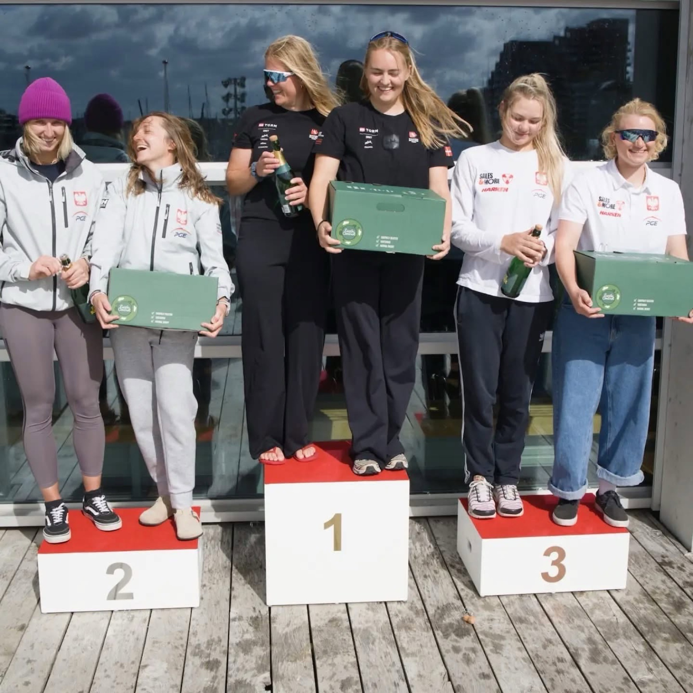
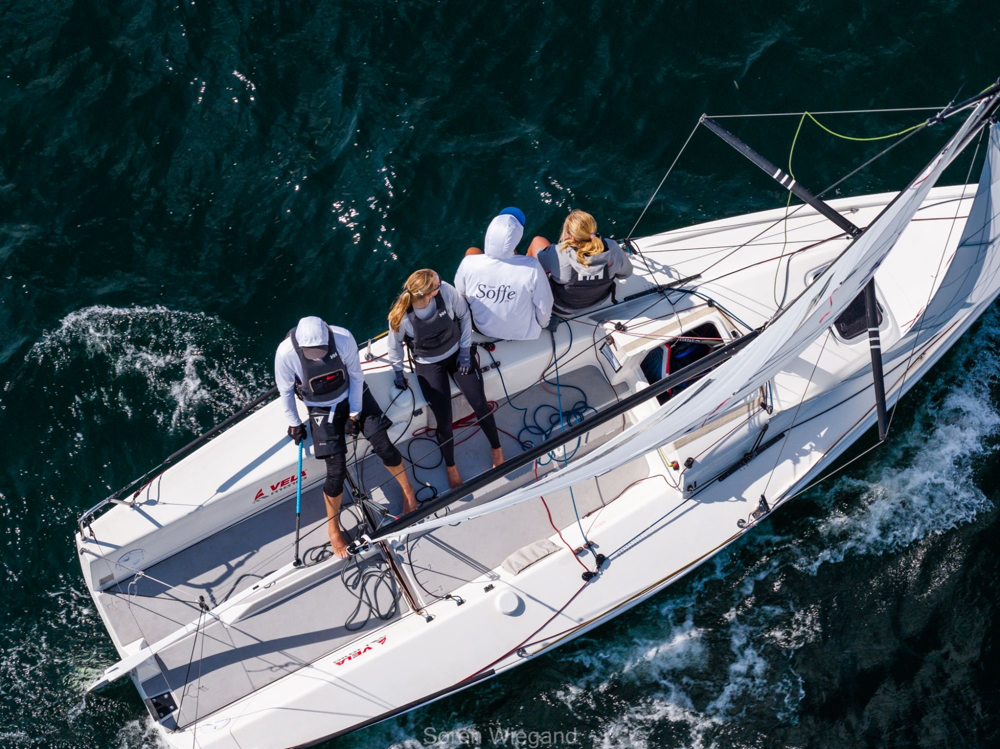
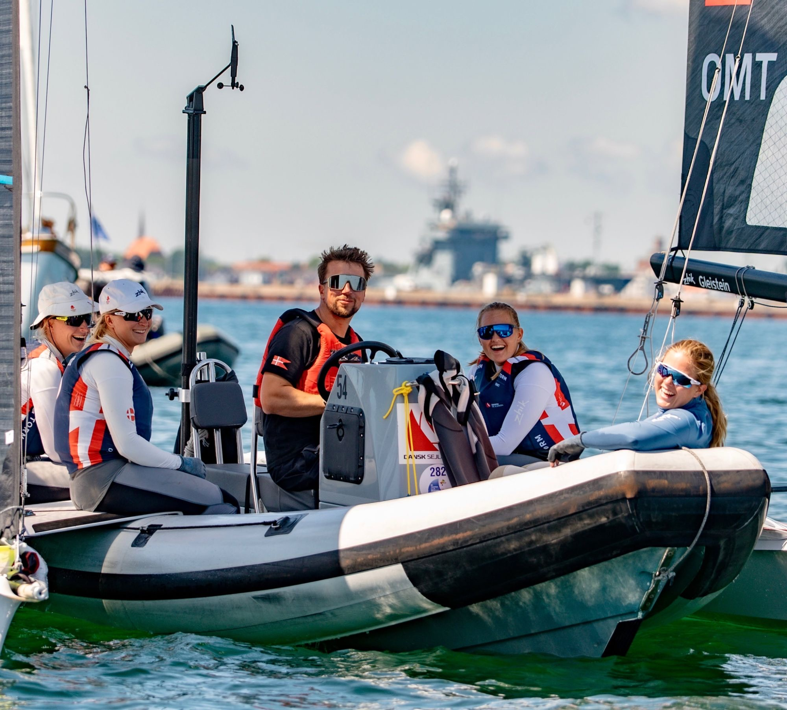
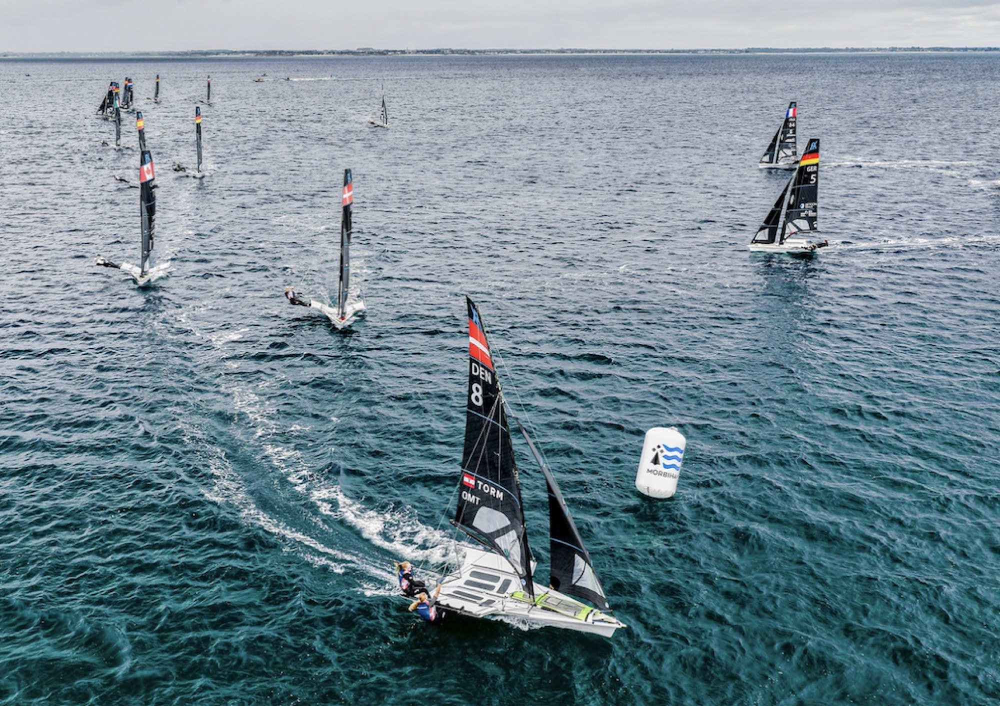
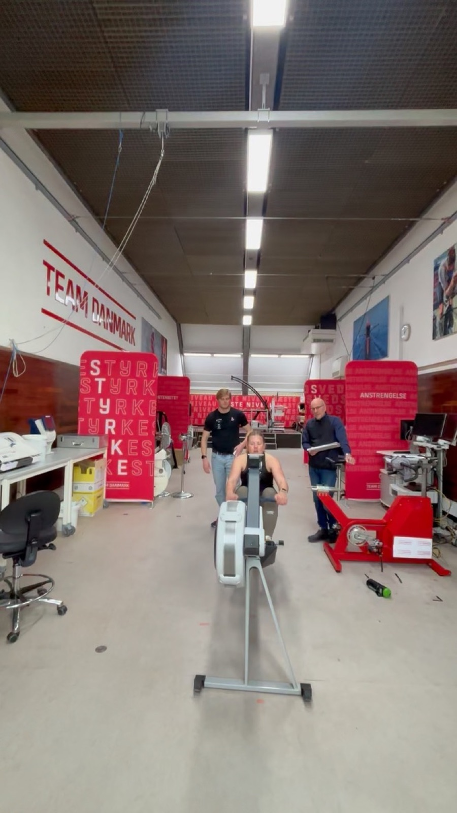
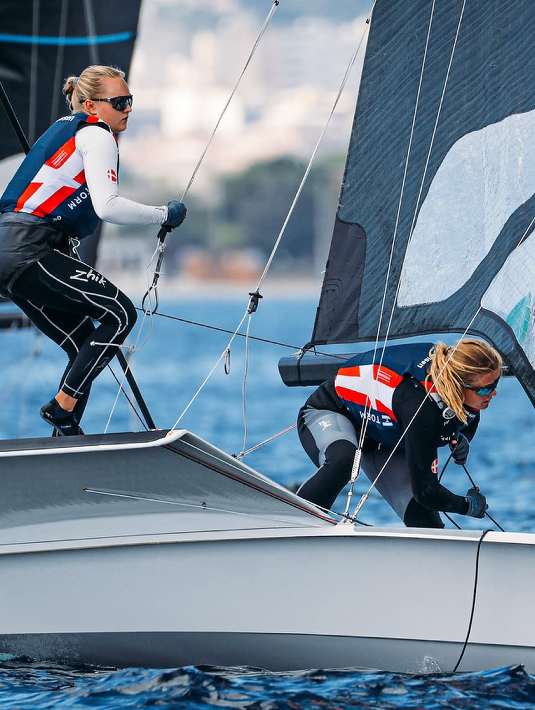

September 2026
Sejr ved Nordic Olympic Days
Vi vandt Nordic Olympic Days! Gode dage med træning og kapsejlads i Aarhus sammen med landsholdene fra Danmark, Estland, Tjekkiet, Sverige og Polen — fedt at have så stærkt og konkurrencedygtigt et felt af landshold samlet her i Danmark. Og selvfølgelig super glade for at slutte ugen af med en sejr!

August 2026
J/70 Mixed Plus Worlds: 2. plads samlet, 1. Corinthian
Sikke en uge! Vi sluttede på en 2. plads samlet og 1. plads i Corinthian (amatør-klassen). Tæt sejlads og mange gode øjeblikke hele ugen igennem. Super glade for resultatet — og endnu gladere for at have delt det med denne besætning ombord på Soffe!

Juli 2026
EM: 18. plads i guldfeltet
2026-sæsonen er slut. Vi havde håbet på et stærkere resultat end en 18. plads ved årets EM, men vi er stolte af fremdriften, vi byggede op undervejs, og af at ligge i top-10 de første dage af stævnet. Samlet set er vi glade for at have nået guldfeltet ved sæsonens to største stævner — og taknemmelige for at kunne konkurrere på trods af Siljes skulderskade. Nu tager vi et skridt tilbage, reflekterer over det vi har lært, og bygger videre derfra.

Maj 2026
VM i Quiberon: 18. plads
Vi sluttede på en 18. plads ved årets VM. Efter sidste års gode resultat havde vi håbet på mere, og det var ikke den udgang, vi sigtede efter. Men vi må huske på den proces, vi er i, med både op- og nedture undervejs — vi bliver ved med at lære, udvikle os og se frem mod det næste.

Marts 2026
Testdag hos Team Danmark
Sikke en dag! Kæmpe tak til Team Danmark for at teste os i sådan en professionel opsætning — en utrolig oplevelse fra start til slut. Nu handler det om at tage det, vi har lært, med videre og presse endnu hårdere for endnu bedre resultater næste gang. Vi er kun lige startet!

Oktober 2025
8. plads ved VM i Sardinien — vores bedste resultat til dato
Vi sejlede os til en flot 8. plads i guldfeltet ved VM i Sardinien — det bedste resultat i vores karriere som seniorbesætning, og endnu et skridt på vejen mod OL 2028.
 Juni 2025
Juni 2025
Bedste danske team ved Kieler Woche
Ved sæsonens første stævne i seniorfeltet sejlede vi side om side med tidligere OL-deltagere og sikrede os en samlet 7. plads — som bedste danske team.

2025
Guld ved Junior Open Mix VM
Rebekka blev Open Junior-verdensmester ved Junior Open Mix VM i Rungsted.